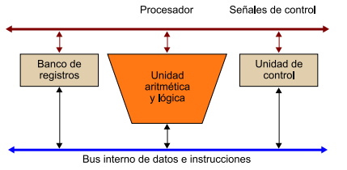
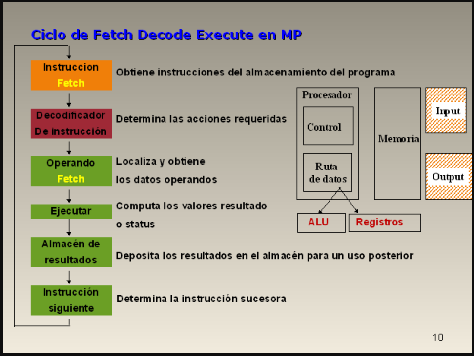
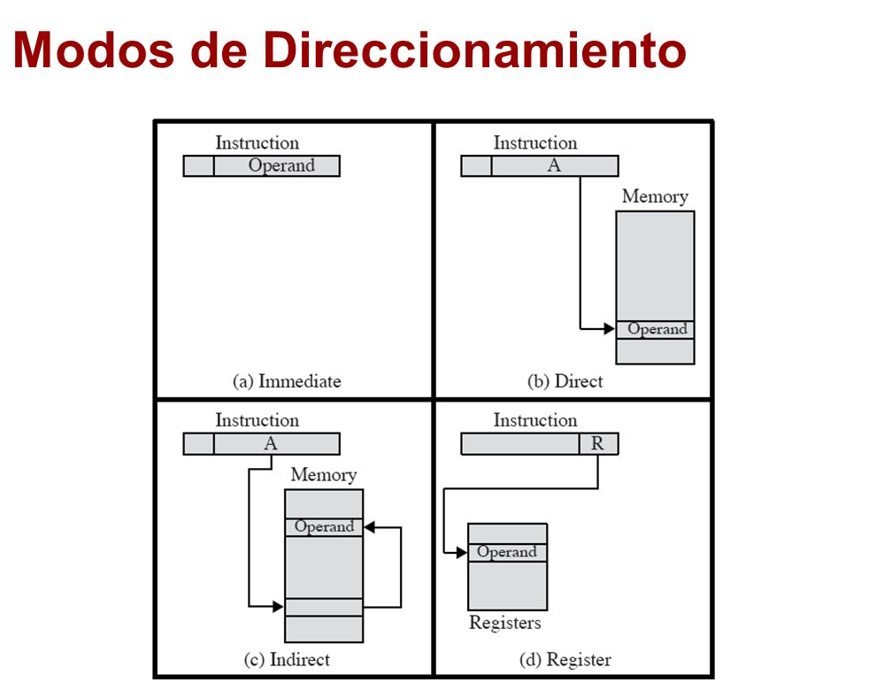

2.1 Organización del procesador
La función principal de un terapeuta es llevar a cabo instrucciones, y su organización se rige por las tareas que debe realizar y cómo debe realizarlas.
Los microprocesadores están diseñados y operados de acuerdo con señales síncronas. Esta señal, conocida como señal de reloj, es una onda cuadrada periódica de cierta frecuencia.
Todas las operaciones realizadas por el procesador se rigen por esta señal de reloj: el ciclo de reloj define la unidad de tiempo base, es decir, la duración mínima de funcionamiento del procesador.
Para ejecutar una instrucción, se requieren uno o más ciclos de reloj, según el tipo de instrucción y los parámetros disponibles. Para llevar a cabo las instrucciones, cada procesador tiene tres componentes principales:
1) Un conjunto de registros: un espacio de almacenamiento temporal para datos e instrucciones dentro de un procesador.
2) Unidad Aritmética y Lógica o ALU1: El circuito que forma el todo. Operaciones aritméticas y lógicas con datos almacenados dentro del procesador.
3) Bloque de control: El circuito que controla el funcionamiento de todos los componentes del microprocesador.
Controla el movimiento de datos e instrucciones hacia y desde el procesador, así como las operaciones de ALU. Debe haber un sistema que permita interconectar estos componentes.
Este sistema de comunicación es específico para cada procesador. Hay dos tipos de conexiones: la línea de control, que se usa para controlar el procesador, y la línea de datos, que se usa para transferir datos e instrucciones entre los diversos componentes del procesador. Este sistema conectado debe comunicarse con el bus del sistema.
El término procesador puede entenderse ahora como microprocesador porque todas las unidades funcionales que componen un microprocesador están contenidas dentro de un chip.
El término procesador ahora puede entenderse como microprocesador porque todas las unidades funcionales que componen el procesador están contenidas dentro de un chip, y dentro del microprocesador se pueden encontrar otras funciones de la calculadora:
Módulo de ejecución SIMD: módulo que se especializa en ejecutar instrucciones SIMD (instrucciones simples, datos múltiples), instrucciones que funcionan con estructuras de datos vectoriales, como las instrucciones multimedia.
Caché: casi todos los procesadores modernos tienen algún nivel de caché integrado en el propio chip del procesador.
Unidad de gestión de memoria (MMU): gestiona el espacio de direcciones virtuales, traduciendo las direcciones de memoria virtual en direcciones de memoria física en tiempo de ejecución.
Esta traducción ayuda a proteger el espacio de direcciones de un programa del espacio de direcciones de otros programas y también puede separar el espacio de memoria del sistema operativo del espacio de memoria del programa del usuario.
Unidad de coma flotante (FPU): Unidad especializada en ejecutar operaciones de coma flotante. Puede funcionar de forma independiente, ya que tiene su propio conjunto de registros.

es necesario disponer de un sistema que permita interconectar estos componentes. Este sistema de interconexión es específico para cada procesador. Distinguimos dos tipos de líneas de interconexión: líneas de control, que permiten gobernar el procesador, y líneas de datos, que permiten transferir los datos y las instrucciones entre los diferentes componentes del procesador. Este sistema de interconexión tiene que disponer de una interfaz con el bus del sistema.
El término procesador actualmente se puede entender como microprocesador porque todas las unidades funcionales que forman el procesador se encuentran dentro de un chip, El término procesador actualmente se puede entender como microprocesadorporque todas las unidades funcionales que forman el procesador se encuentran dentro de un chip, dentro de los microprocesadores se pueden encontrar otras unidades funcionales del computador:
-Unidades de ejecución SIMD: unidades especializadas en la ejecución de instrucciones SIMD (single instruction, multiple data), instrucciones que trabajan con estructuras de datos vectoriales, como por ejemplo instrucciones multimedia.
-Memoria caché: prácticamente todos los procesadores modernos incorporan dentro del propio chip del procesador algunos niveles de memoria caché.
-Unidad de gestión de memoria o memory management unit (MMU): gestiona el espacio de direcciones virtuales, traduciendo las direcciones de memoria virtual a direcciones de memoria física en tiempo de ejecución. Esta traducción permite proteger el espacio de direcciones de un programa del espacio de direcciones de otros programas y también permite separar el espacio de memoria del sistema operativo del espacio de memoria de los programas de usuario.
-Unidad de punto flotante o floating point unit(FPU): unidad especializada en hacer operaciones en punto flotante; puede funcionar de manera autónoma, ya que dispone de un conjunto de registros propio.
2.2.1 Registros visibles para el usuario
Un registro visible por el usuario es aquél que puede ser referenciado por medio del lenguaje máquina que ejecuta el procesador. Podemos clasificarlos en las siguientes categorías:
Uso general: pueden ser asignados por el programador a diversas funciones. A veces, su uso dentro del repertorio de instrucciones es ortogonal a la operación.Es decir, cualquier registro de uso general puede contener el operando para cualquier código de operación.sinembargo, existen restricciones.Por ejemplo, puede haber registros específicos para operaciones en coma flotante y para operaciones con la pila.
Datos: pueden usarse únicamente para contener datos y no se pueden emplear en el cálculo de la dirección de un operando.
Direcciones: pueden ser de uso más O menos general, o pueden estar dedicados a un modo de direccionamiento particular. Entre otros, se pueden citar los siguientes:
Punteros de segmento: en una máquina con direccionamiento segmentado un registro de segmento contiene la dirección de la base del segmento. Puede haber múltiples registros: por ejemplo uno para el sistema operativo y otro para el proceso actual.
Registros indice: se usan para direccionamiento indexado y pueden ser autoindexados.
Códigos de condición:(también llamados indicadores o «flags» ) son bits fijados por el hardware del procesador como resultado de alguna operación.
2.2.3 Ejemplos de registros de CPU reales
En un diseño de procesador específico, se pueden encontrar otros registros
Relacionado con el estado y el control. Puede haber un puntero al bloque de memoria
Contiene información de estado adicional (por ejemplo, bloque de control de
proceso). En las máquinas que utilizan interrupciones vectorizadas, puede haber una
Interrumpir la grabación de vectores. Si la batería se usa para realizar ciertos
Función (por ejemplo, llamada de subrutina), necesita un puntero de pila
sistema. En el sistema de memoria virtual, se utilizan punteros a tablas de páginas. Finalmente, los registros se pueden utilizar para controlar las operaciones de E/S.
El MC68000 distribuye sus registros de 32 bits en ocho de datos y nueve de direcciones. Los ocho registros de datos se usan principalmente paramanipulación de datos y también se usan en direccionamiento como registros de índice.
El Intel 8086 usa un enfoque diferente para la organización de los registros. Cadauno de los registros tiene un uso especial, aunque algunos registros se puedenemplear también para un uso general. El 8086 contiene cuatro registros de datosde 16 bits que son direccionables como registros de bytes o como registros de 16bits, y cuatro registros punteros e índices de 16 bits. Los registros de datos pueden utilizarse como de uso general en algunas instrucciones. En otras, los registros se usan implícitamente.

2.3.1 Ciclo Fetch-Decode-Execute
Procedimiento bien establecido:
1.- Buscar la instrucción en la memoria principal
-Se vuelca el valor del contador de programa sobre el bus de direcciones.
-Entonces la CPU pasa la instrucción de la memoria principal a través del bus de datos al Registro de Datos de Memoria (MDR).
-A continuación el valor del MDR es colocado en el Registro de Instrucción Actual (CIR), un circuito que guarda la instrucción temporalmente de manera que pueda ser decodificada y ejecutado.
2.- Decodificar la instrucción.
-El decodificador de instrucción interpreta e implementa la instrucción.
-El registro de instrucción (IR) mantiene la instrucción en curso mientras el contador de programa (PC, program counter) guarda la dirección de memoria de la siguiente instrucción a ser ejecutada.
-Recogida de datos desde la memoria principal.
-También se lee la dirección efectiva de la memoria principal si la instrucción tiene una dirección indirecta, y se recogen los datos requeridos de la memoria principal para ser procesados y colocados en los registros de datos.
3.- Ejecutar la instrucción.
-A partir del registro de instrucción, los datos que forman la instrucción son decodificados por la unidad de control.
-Ésta interpreta la información como una secuencia de señales de control que son enviadas a las unidades funcionales relevantes de la CPU para realizar la operación requerida por la instrucción.
4.- Almacenar o guardar resultados.
-El resultado generado por la operación es almacenado en la memoria principal o enviado a un dispositivo de salida dependiendo de la instrucción.
-Basándose en los resultados de la operación, el contador de programa se incrementa para apuntar a la siguiente instrucción o se actualiza con una dirección diferente donde la próxima instrucción será recogida.
Ciclo de búsqueda.
-Los pasos 1 y 2 del ciclo de instrucción se conocen como ciclo de búsqueda (fetch). Estos pasos son idénticos en todas las instrucciones.
-El ciclo de búsqueda procesa la instrucción a partir de la palabra de instrucción, que contiene el código de operación y el operando.
Ciclo de ejecución.
-Los pasos 3 y 4 del ciclo de instrucción se conocen como ciclo de ejecución. Estos pasos cambiarán con cada tipo de instrucción.
El primer paso del ciclo de ejecución es el proceso de memoria, en que los datos se transfieren entre la CPU y el módulo de entrada/salida (I/O).
A continuación se produce el proceso de datos, que usa operaciones matemáticas así como operaciones lógicas en referencia a los datos.
Después tiene lugar el paso de alteraciones centrales, que son una secuencia de operaciones, por ejemplo una operación de salto. El último paso es una operación combinada de todos los otros pasos.

2.3.2 Segmentación de instrucciones
Es una técnica que permite implementar el paralelismo a nivel de instrucción en un único procesador. La segmentación intenta tener ocupadas con instrucciones todas las partes del procesador dividiendo las instrucciones en una serie de pasos secuenciales que efectuarán distintas unidades de la CPU, tratando en paralelo diferentes partes de las instrucciones. Permite una mayor tasa de transferencia efectiva por parte de la CPU que la que sería posible a una determinada frecuencia de reloj, pero puede aumentar la latencia debido al trabajo adicional que supone el propio proceso de la segmentación.
El número de pasos dependientes varían según la arquitectura de la máquina.
Conforme la segmentación se hace más "profunda" (aumentando el número de pasos dependientes), un paso determinado puede implementarse con circuitería más simple, lo cual puede permitir que el reloj del procesador vaya más rápido. En inglés, las segmentaciones de este tipo pueden llamarse superpipelines.
Se dice que un procesador está totalmente segmentado si puede leer una instrucción en cada ciclo. Por tanto, si ciertas instrucciones o condiciones requieren un retardo que impide la lectura de nuevas instrucciones, el procesador no está totalmente segmentado.
2.3.3 Conjunto de instrucciones. Características y funciones
Los conjuntos de instrucciones de las máquinas deben tender a poseer una serie de propiedades, bastante ideales e imprecisas, que pueden resumirse en las siguientes:
-El conjunto de instrucciones de un computador debe ser completo en el sentido de que se pueda construir un programa para evaluar una función computable usando una cantidad de memoria razonable y empleando un tiempo moderado, es decir, el número de instrucciones de ese programa no debe ser demasiado elevado.
-Los juegos de instrucciones también tienen que ser eficientes, esto significa que las funciones más necesarias deben poder realizarse usando pocas instrucciones.
-El conjunto de instrucciones de una máquina debe ser regular, es decir debe ser simétrico (por ejemplo, si existe una instrucción de desplazamiento a la izquierda, debe haber otra de desplazamiento a la derecha, etc.) y ortogonal, es decir, deben poder combinarse, en la medida de lo posible, todos las operaciones con todos los tipos de datos y modos de direccionamiento. En muchas ocasiones, también se le debe exigir a un computador que su juego de instrucciones sea compatible con modelos anteriores.
Existen principalmente de 3 tipos: CISC (Complex Instruction Set Computer), RISC (Reduced Instruction Set Computer) y SISC (Simple Instruction Set Computing).
Las características que se pretende que tenga un conjunto de instrucciones son cuatro, principalmente:
-Completo: Que se pueda realizar en un tiempo finito cualquier tarea ejecutable con un ordenador (computable o decidible).
-Eficiente: Que permita alta velocidad de cálculo sin exigir una elevada complejidad en su UC y ALU y sin consumir excesivos recursos (memoria), es decir, debe cumplir su tarea en un tiempo razonable minimizando el uso de los recursos.
-Autocontenidas: Esto es, que contengan en sí mismas toda la información necesaria para ejecutarse.
-Independientes: Que no dependan de la ejecución de alguna otra instrucción.
Se puede comprobar que para que un conjunto de instrucciones sea completo solo se necesitan cuatro instrucciones:
-Escritura.
-Mover a la izquierda una posición y leer.
-Mover a la derecha una posición y leer.
-Parar.
2.3.4 Modos de direccionamiento
Son las diferentes maneras de especificar un operando dentro de una instrucción. Un modo de direccionamiento especifica la forma de calcular la dirección de memoria efectiva de un operando mediante el uso de la información contenida en registros dentro de una instrucción de la máquina.
Direccionamiento base o desplazamiento, donde uno de los operandos está en una localidad de memoria cuya dirección es la suma de un registro y una constante que forma parte de la misma instrucción.
Ejemplos de instrucciones que usan este modo de direccionamiento: lw, sw, etc.
Direccionamiento inmediato, donde uno de los operandos es una constante que está en la misma instrucción.
Ejemplos de instrucciones que usan este modo de direccionamiento: addi, slti, etc.
Direccionamiento relativo al PC, donde se forma una dirección sumando una constante, que está en la instrucción, con el registro PC (Program Counter). El resultado de la suma corresponde a la dirección destino si un brinco condicional se va a realizar.
Ejemplos de instrucciones que usan este modo de direccionamiento: beq y bne.
Direccionamiento pseudo directo, donde la dirección destino de un salto corresponde a la concatenación de 26 bits que están en la misma instrucción con los bits más significativos del PC.
Ejemplos de instrucciones que usan este modo de direccionamiento: j y jal.

2.4 Casos de estudios de CPU reales
I-8086: Los registros del procesador, se usan para contener los datos con que se está trabajando puesto que el acceso a los registros es mucho más rápido que los accesos a memoria. Se pueden realizar operaciones aritméticas y lógicas, comparaciones, entre otras. Los modos del 8086 son indirectos por registro, indexados o directos por registro.
Motorola 68000: El mismo direccionamiento lleva implícito el tipo de registro sobre el que trabaja (direcciones o datos). Está basado en dos bancos de 8 registros de 32 bits. Un banco es de datos (Dn) y el otro de punteros (An). Además contiene un contador de programa de 32 bits y un registro de estado de 16 bits.
80386: Para este microprocesador existe un modo nuevo que requiere un byte adicional denominado SIB (escala, índice, base) que se añade al byte de operandos, es útil para direccionar elementos de vectores de longitudes diferentes en bucles. Es una alternativa a los modos autoindexados que esta máquina no soporta.
Procesador I3 Línea de microprocesadores Intel, gama baja. 3 era generación 2010. Características: Procesador de 2 núcleos 4 hilos de procesamiento en paralelo Tarjeta gráfica integrada Controlador de memoria Controlador PCI Express 2.0 integrado.